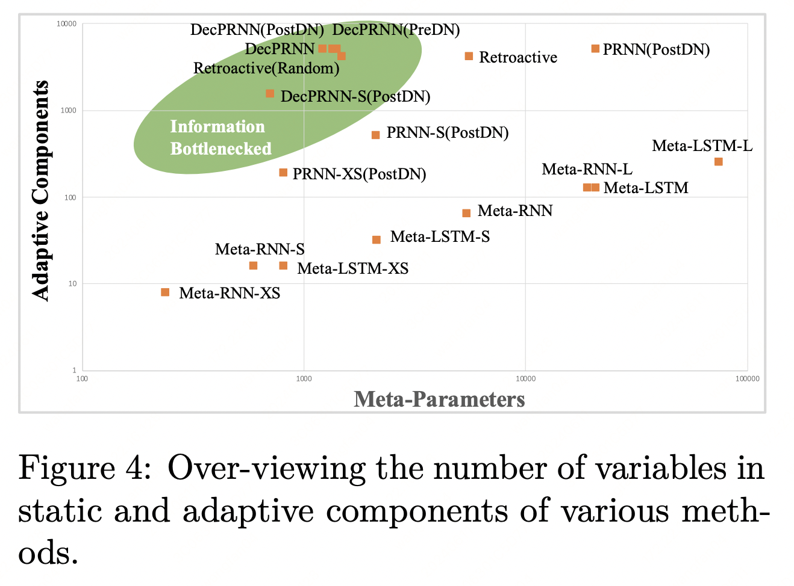

信息瓶颈是生物神经网络的一个重要特征。在生物进化过程中，基因遗传的信息相比于像人类一样的高等动物大脑的复杂性简单得多的情况。
这种现象给人工智能带来了重要的启示：因为信息瓶颈的存在，生物神经网络无法直接从上一代遗传大量的技能和知识，而是通过后天重新学习知识和技能。而基因被认为主要编码了记忆和学习的能力而不是记忆和技能本身。
人类学习和记忆能力的一个重要方式就是神经网络可塑性。
不同于当前人工神经网络，预训练后权重很难再调整，而且每次调整必须有目标函数和大量数据，使用梯度下降的方式，可塑性允许神经网络在推理的同时修正自身的权重，符合无梯度上下文学习和元学习的一些特征。
然而，当前人工设计的可塑性规则恰好都不符合信息瓶颈的特征。往往需要比参数更多的学习规则。
我们尝试设计符合信息瓶颈的可塑性规则，这种模型不具备很强的初始能力，但随着上下文的增加，这种模型会变得越来越擅长。这类模型的典型特点是：参数量少，但是存储记忆能力较强。这种学习方式，更符合生物智能体的特点：婴儿阶段起点更低，但上下文学习的潜力更大。

信息瓶颈限制下的生物进化示意图。我们的基因遗传自上一辈，但其包含信息量相对较少(这里的Genotype)。
而我们大脑记忆全部来自于后天，其可记忆内容数量至少比基因高三个量级(这里的Phenotype)
|
进化一个较少规则驱动的可塑的循环神经网络
我们用一个参数量很少（学习规则很少，只有几百）但记忆空间很大（记忆状态几千）的可塑的循环神经网络（Decomposed Plasitic RNN, DecPRNN）来进行上下文强化学习，针对迷宫环境进行训练和评测。我们发现一些重要结论
- 更少的参数意味着更低的起点
- 更大的记忆空间意味着更高的终点
- 参数量和最终的能力无直接关联，甚至更少的参数量会有更好的泛化性

一个循环且其参数权重可塑的神经网络，利用交互轨迹进行上下文强化学习。模型每一步将状态、动作、奖励作为输入，预测下一时刻的动作。
|
|

不同神经网络的参数(元参数，Meta-Parameter)和记忆规模(Adaptive-Components)，我们发现，参数量较小，模型具有更好的泛化性。记忆空间越大，模型具有更好的学习能力
|

不同神经网络的最终表现。符合基因瓶颈的结构和算法，起点低，但最终效果更好。
|
对于通用智能的启示
|
我们呼吁，不应过分强调海量参数。适中的参数量 + 海量的可读写记忆单元，对于建立通用人工智能具有更好的前景。
这里的记忆单元，是模型通过上下文学习到的显式（如记忆状态）或者隐式的记忆单元（如可塑的连接权重）。
我们也认为，通过多个重复的单元，能降低参数量并且进一步增加记忆空间，因此，群聚智能也将是非常具有潜力的方向。
|
| |